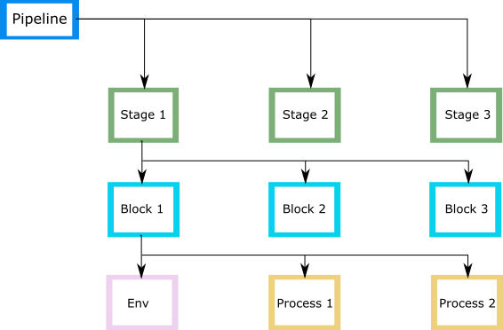

Application pipelines
Allows you to run application processes in multiple environments and promote versions through a set of stages.
Application pipelines includes an ordered list of stages. Each stage in a pipeline is comprised of blocks. A block consists of environments and an ordered list of processes that you want to execute in this block.
The following chart is a graphical representation of an example pipeline definition.

You can create and run multiple pipelines in an application. The pipelines are executed manually.